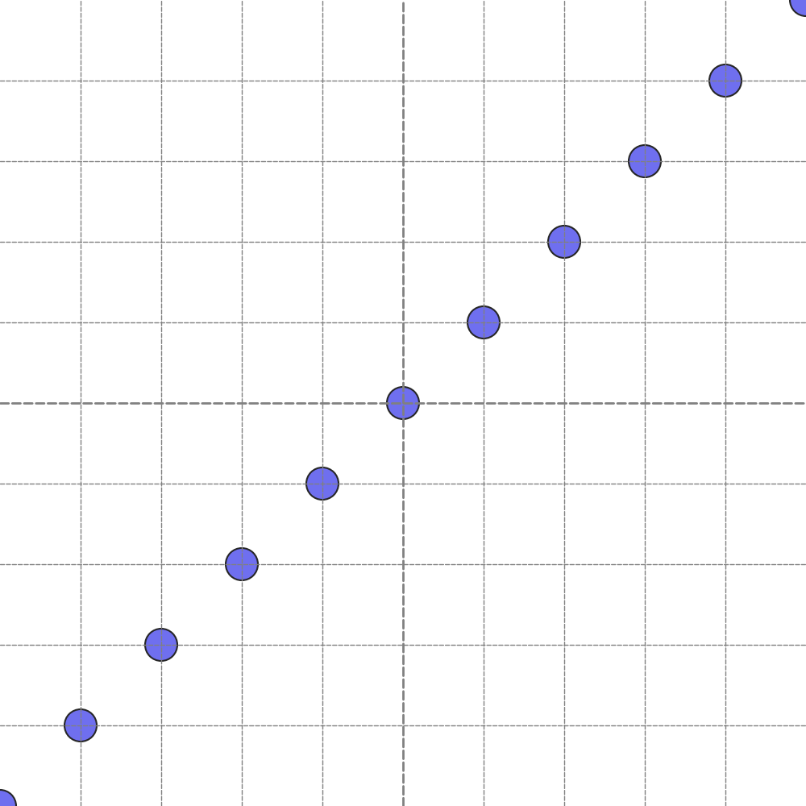
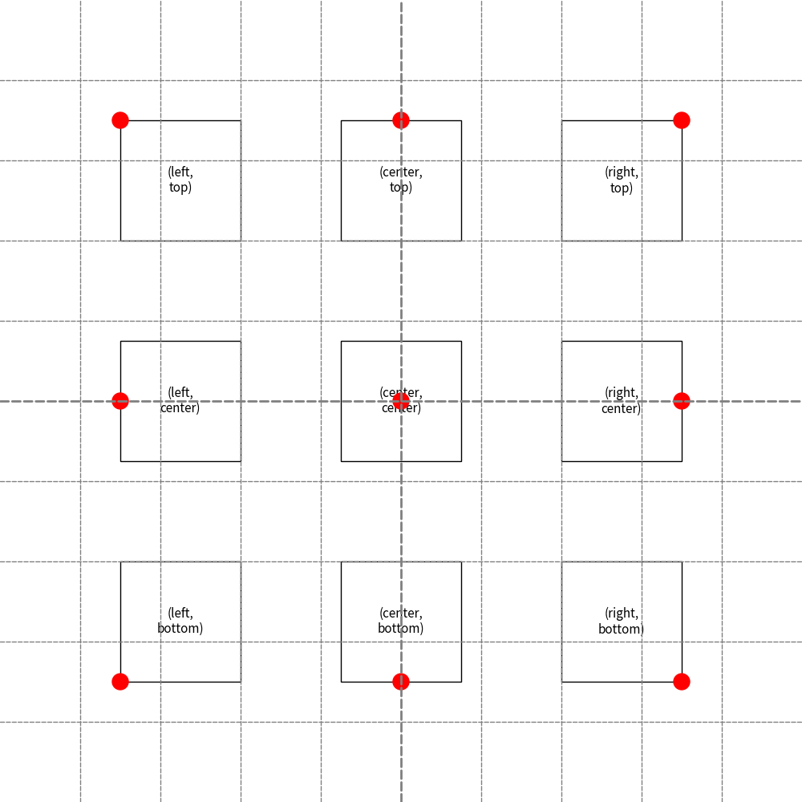
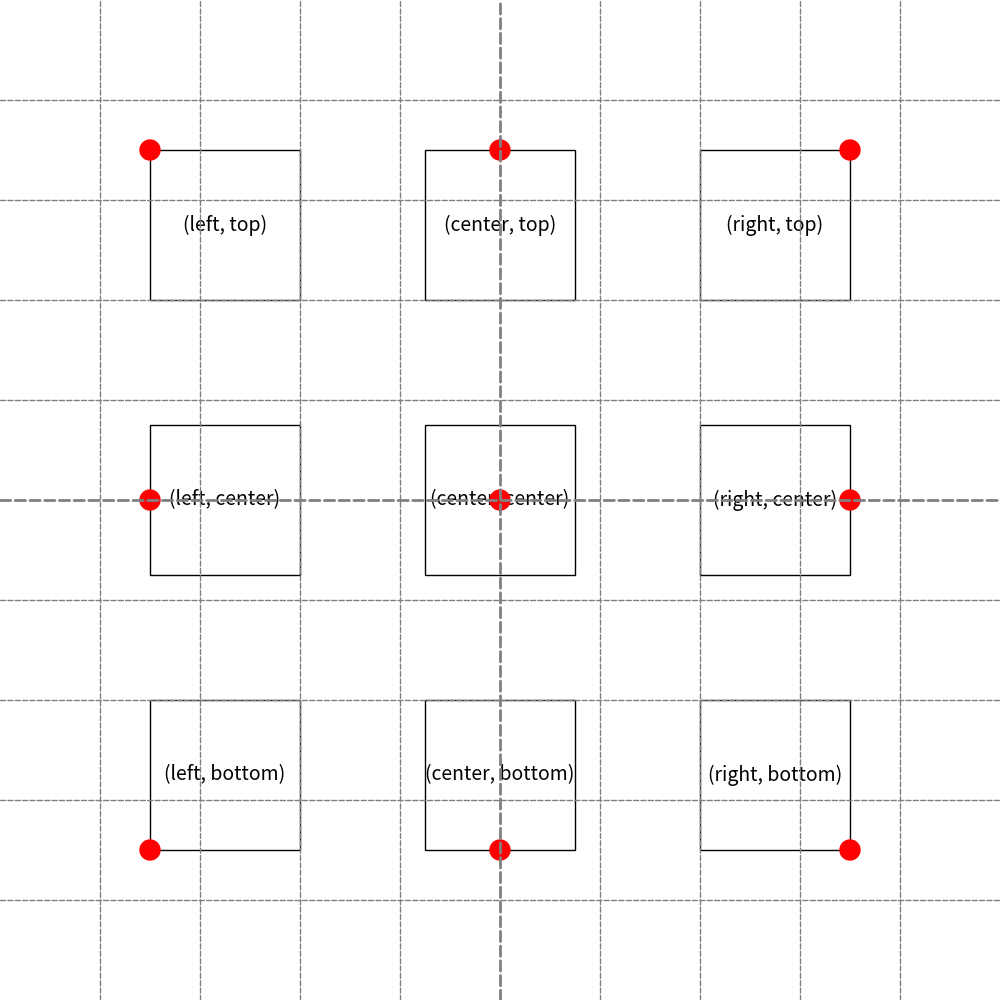
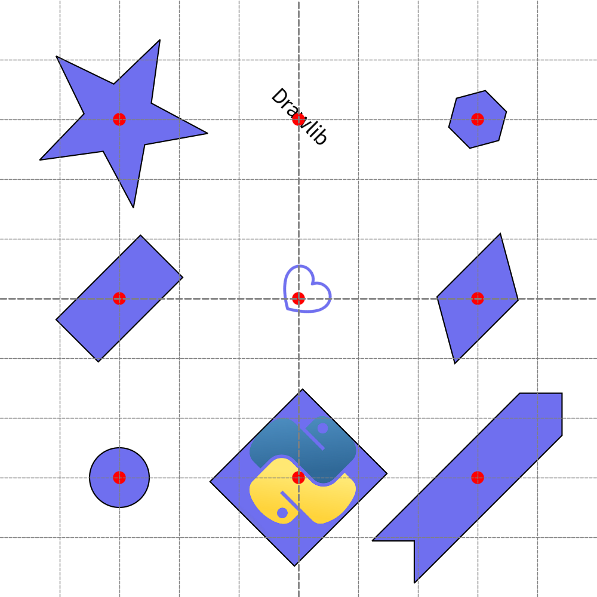

==========================
Coordinate and Alignment
Drawing items accurately requires precise positioning. Understanding drawlib's coordinates and alignment is essential to achieve this.
Coordinate
Nearly all drawing functions include arguments like xy or similar, such as xy1 or xys.
These represent the tuple (X, Y) coordinate of your drawing item.
Here, X represents the x-axis value, and Y represents the y-axis value.
Let's delve into some code examples:
from drawlib.canvas import config, save
from drawlib.shapes import circle
config(width=10, height=10, grid_only=True)
for i in range(11):
circle(xy=(i, i), radius=0.2)
save()

In this example, setting config(width=10, height=10, ...) implies:
- x-axis: 0 to 10
- y-axis: 0 to 10
Both axes always start from 0. In this scenario, the bottom-left is (0, 0), and the top-right is (10, 10). Within the for loop, we plot small circles from coordinates (0, 0) to (10, 10).
Executing this code generates the following image:
from drawlib.canvas import config, save
from drawlib.shapes import circle
config(width=10, height=10, grid_only=True)
for i in range(11):
circle(xy=(i, i), radius=0.2)
save()

Circles from (0, 0) to (10, 10)
As you observe, (0, 0) represents the minimum value. Therefore, the circle at (0, 0) is only partially displayed. Shapes existing at values less than 0 are not drawn, and similarly, those exceeding the maximum value of 10 are omitted.
The default values for width and height are both 100.
We recommend explicitly setting width and height using config() even if you're using default values to showcase the image's coordinate size.
You may need to calculate coordinates either mentally or programmatically within drawlib's code for drawing objects.
It's advisable to use simple values such as 100 to simplify calculations.
Setting complex values like 1920 can complicate matters.
We prefer using config(width=100, height=100) or config(width=100, height=50).
Alignment
Alignment refers to the arrangement of items, such as text, images, or shapes, on drawlib's canvas.
These items can be aligned horizontally and vertically.
The default alignment is center horizontally and center vertically.
You can alter alignment using the unified Style class (or function arguments) for each drawing item:
text_halign: Horizontal alignment ("left","center","right")text_valign: Vertical alignment ("bottom","center","top")
If alignment isn't specified, "center" is applied to both horizontal and vertical alignment by default.
Let's examine the alignment of rectangles with an example code:
from drawlib.canvas import config, save
from drawlib.colors import Colors
from drawlib.shapes import circle, rectangle
from drawlib.text import text
from drawlib.types import Style
config(width=100, height=100, grid_only=True)
for x, halign in [(15, "left"), (50, "center"), (85, "right")]:
for y, valign in [(15, "bottom"), (50, "center"), (85, "top")]:
rectangle(
xy=(x, y),
width=15,
height=15,
style=Style(text_halign=halign, text_valign=valign),
text=f"({halign}, {valign})",
textstyle=Style(text_size=14),
)
circle(
xy=(x, y),
radius=1,
style=Style(line_color=Colors.Red, fill_color=Colors.Red),
)
save()

In this code, we display nine variations of alignments. The red dot represents "xy", and the inner text indicates the alignment.
from drawlib.canvas import config, save
from drawlib.colors import Colors
from drawlib.shapes import circle, rectangle
from drawlib.text import text
from drawlib.types import Style
config(width=100, height=100, grid_only=True)
for x, halign in [(15, "left"), (50, "center"), (85, "right")]:
for y, valign in [(15, "bottom"), (50, "center"), (85, "top")]:
rectangle(
xy=(x, y),
width=15,
height=15,
style=Style(text_halign=halign, text_valign=valign),
text=f"({halign}, {valign})",
textstyle=Style(text_size=14),
)
circle(
xy=(x, y),
radius=1,
style=Style(line_color=Colors.Red, fill_color=Colors.Red),
)
save()

Alignment variations.
We prefer using (center, center) and (left, bottom).
Occasionally, we employ (left, center) and (center, bottom).
(left, bottom) is beneficial for pinpointing the exact location of rectangle-like shape items.
However, center alignment is much simpler for aligning different-sized multiple items horizontally or vertically.
That's why we've set (center, center) as the default for all items.
Consistency is key.
Here's an example of aligning items horizontally and vertically:
from drawlib.canvas import config, save
from drawlib.colors import Colors
from drawlib.icons import phosphor
from drawlib.images import image
from drawlib.shapes import chevron, circle, parallelogram, rectangle, regularpolygon, star
from drawlib.text import text
from drawlib.types import Style
config(width=100, height=100, grid_only=True)
x1 = 20
x2 = 50
x3 = 80
y1 = 20
y2 = 50
y3 = 80
circle((x1, y1), radius=5)
rectangle((x1, y2), width=20, height=10, angle=45)
star((x1, y3), 5, 15, 6, angle=45)
image((x2, y1), width=20, image="python.png", angle=315)
phosphor.heart((x2, y2), 10, angle=315)
text((x2, y3), "Drawlib", angle=315, style=Style(text_size=24))
chevron((x3, y1), 35, 10, corner_angle=45, angle=45)
parallelogram((x3, y2), 15, 10, corner_angle=60, angle=45)
regularpolygon((x3, y3), num_vertex=6, radius=5, angle=45)
for x in [x1, x2, x3]:
for y in [y1, y2, y3]:
circle((x, y), 1, style=Style(fill_color=Colors.Red, line_color=Colors.Red))
save()

Each item have different size an angles.
If we use alignment like (left, bottom), aligning items becomes complex.
However, (center, center) is straightforward.
from drawlib.canvas import config, save
from drawlib.colors import Colors
from drawlib.icons import phosphor
from drawlib.images import image
from drawlib.shapes import chevron, circle, parallelogram, rectangle, regularpolygon, star
from drawlib.text import text
from drawlib.types import Style
config(width=100, height=100, grid_only=True)
x1 = 20
x2 = 50
x3 = 80
y1 = 20
y2 = 50
y3 = 80
circle((x1, y1), radius=5)
rectangle((x1, y2), width=20, height=10, angle=45)
star((x1, y3), 5, 15, 6, angle=45)
image((x2, y1), width=20, image="python.png", angle=315)
phosphor.heart((x2, y2), 10, angle=315)
text((x2, y3), "Drawlib", angle=315, style=Style(text_size=24))
chevron((x3, y1), 35, 10, corner_angle=45, angle=45)
parallelogram((x3, y2), 15, 10, corner_angle=60, angle=45)
regularpolygon((x3, y3), num_vertex=6, radius=5, angle=45)
for x in [x1, x2, x3]:
for y in [y1, y2, y3]:
circle((x, y), 1, style=Style(fill_color=Colors.Red, line_color=Colors.Red))
save()

Align center, center is recommended
Please consider the best alignment for placing items. It depends on the situation.
© 2026 drawlib by Yuichi Ito. Released under the Apache 2.0 License.